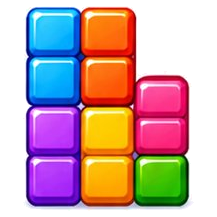

CandyTetris
Tetris on the SugarCraft stack

candy-tetris is Tetris for the terminal, built on the SugarCraft runtime. It uses the Super Rotation System with its wall kicks, a uniform seven-piece bag, a ghost piece, hold and a gravity curve that speeds up with the level. The scoring starts from the NES base points and adds the modern Guideline bonuses: T-Spin, back-to-back, combo and perfect clear. It also has a VS mode against a computer opponent. The design antecedent is tetrigo, a Go game.
Install
composer require sugarcraft/candy-tetris
./vendor/bin/candy-tetris # single player
./vendor/bin/candy-tetris --vs # VS the computerRequires php-cli 8.3 or newer, with ext-intl and ext-mbstring. Both are declared in the manifest, and the launcher checks them before it starts, so a missing extension is refused with one plain line that names it. From a clone of the monorepo, run composer install in the candy-tetris/ directory and then ./bin/candy-tetris.
A rolling candy-tetris.phar is published under the candy-tetris/latest release, with a .sha256 digest and a .phar.commit file that names the tested build. Verify the download before you run it:
sha256sum -c candy-tetris.phar.sha256
php candy-tetris.phar # single player, no install neededStable cuts are tagged candy-tetris/v*. The launcher detects that it is running from inside a phar and loads the bundled autoloader, so the file still boots after a rename.
Quickstart
Run it in a real terminal. The game needs a terminal of at least 40 columns by 24 rows, and the full single-player frame is 40 by 33. The commands below show what the launcher answers without a terminal, and what its flags do.
./bin/candy-tetris # single player, in a terminal
./bin/candy-tetris --vs # VS the computer
./bin/candy-tetris --seed=1234 # reproducible pieces and garbage
./bin/candy-tetris --version # print the version and exit 0$ ./bin/candy-tetris --version
candy-tetris dev-master
$ ./bin/candy-tetris < /dev/null
candy-tetris needs an interactive terminal: run it from a TTY (not a pipe or redirect) with TERM set to something other than dumb.
$ echo $?
1The refusal is one plain line on stderr, with no escape bytes, and it exits 1. The version prints dev-master from a checkout. A release phar prints its build stamp instead.
The --help screen repeats the shipped keys and the terminal floor, and it reads them from the same tables the game uses, so the help and the code cannot drift apart.
Concepts
The game is a Model in the SugarCraft TEA style. It holds an immutable state, which is a Game with a Board, a falling Piece, a Bag, a Score and the hold slot. Each message that arrives, whether a key, a gravity tick or a lock-delay tick, yields a new state and an optional command. The renderer is a pure function from the state to a string, and it never changes the game.
The pure parts stand alone. Tetromino, Piece, Board, Bag and Score are value objects with no runtime, so each one can be tested or driven from a script. The rotation tables live in Rotation\SrsKickTable, and the scoring rules live in Scoring\TSpin and Score.
The bag and the seed
The seven pieces are shuffled uniformly into a bag, and the bag is drawn until it is empty, then refilled. The shuffle takes an injectable random source. A seed makes the whole run replayable: the bag and the garbage holes both come from the seed. Without --seed, the launch takes fresh entropy and does not stamp a seed on the screen.
Single player and VS are two models
Game is one player's field. VsGame wraps two Game instances, one for you and one for the computer, and the two exchange garbage rows. The VS model is the pattern to copy for a third mode. A new mode should wrap Game rather than branch inside it.
Tasks
Play a reproducible run
./bin/candy-tetris --seed=1234The same seed with the same key presses produces the same pieces and the same garbage holes. The score card then carries a SEED 1234 stamp, which is the replay handle. A run with no seed captures fresh entropy, and it shows no stamp.
Remap a key
Put overrides in $XDG_CONFIG_HOME/candy-tetris/keys.json, or in $HOME/.config/candy-tetris/keys.json when XDG_CONFIG_HOME is not set. The file is a JSON object that maps an action id to a non-empty list of key tokens:
{ "hold": ["b"], "hard-drop": ["enter"] }An override replaces that action's whole list. The actions you do not name keep their shipped keys. The remapped keys show up on the help card, the intro card and the confirm prompts, so the game teaches the keys you actually use. See the table in Remapping keys below for what a malformed file does.
Start from a known state in code
use SugarCraft\Tetris\Bag;
use SugarCraft\Tetris\Game;
$game = Game::startWithLockDelay(Bag::seeded(42), lockDelayMs: 500);
$game = $game->addGarbageRows(2); // push two garbage rows from the bottomGame::start() takes a seed and a bag, and startWithLockDelay() also sets the grounded window in milliseconds. addGarbageRows() is the same door the VS opponent uses, so a test can build any board it needs.
Drive the game without a terminal
php examples/headless-game.php < /dev/nullThe example seeds a game, sends a list of key messages to update(), and prints the frame and the score. It is the fastest way to see what the model does with a sequence of keys.
Reset the best score
The record lives in $XDG_CONFIG_HOME/candy-tetris/scores.json, or in ~/.config/candy-tetris/scores.json. Delete the file to clear the solo best, the game count and the versus tally. A corrupt record is announced on stderr, and the game starts fresh without zeroing the old file.
Play the computer in VS mode
./bin/candy-tetris --vs
./bin/candy-tetris -vEach line you clear pushes one row at the opponent, and each line the opponent clears pushes one row back. Every garbage row has exactly one hole. The opponent runs on its own clock, so its difficulty comes from its board's pace, not from your level. The VS board needs a terminal of at least 54 by 33.
Controls and keybindings
The shipped default keys are below. The help card, the versus strip, the intro card, the one-row sidebar pointer, the confirm prompts and the --help screen all draw from this table, so a remap is visible wherever the game teaches its keys.
| Key | Action |
|---|---|
| ← / → | Move left or right |
| ↑ / x | Rotate clockwise |
| z | Rotate counter-clockwise |
| a | Rotate 180 degrees |
| ↓ | Soft drop |
| Space | Hard drop |
| c | Hold the piece |
| p | Pause or resume |
| h | Open or close the key reference card, from any posture |
| r | New game. It asks first during play, and it is instant after game over |
| q | Quit. It asks first during play, and Ctrl+C leaves in one press |
In VS mode, r starts a new game only after game over, because a live forfeit belongs to the solo confirm. q quits at once, with no confirm, and the help card does not open in the duel.
Remapping keys
An action id is one of quit, pause, restart, hold, move-left, move-right, soft-drop, rotate-cw, rotate-ccw, rotate-180, hard-drop, begin and help. A token is a single character such as "b", a key name such as "left", "space" or "enter", or a ctrl+ chord such as "ctrl+c". Tokens are case-folded when the file loads.
| Edge | What happens |
|---|---|
| No file | The defaults apply, and the game reads nothing at boot. |
| Malformed file, or a bad shape | One stderr line names the file, and the session boots on the defaults. One bad entry discards the whole file, so the game never applies half a map. |
| A directory, symlink or socket at the path | Refused the same way. The file is checked with lstat, so the game never follows it or blocks on it. |
An unknown key name, such as "spce" | A load-time error, so a typo does not leave a binding deaf with no trace. |
| An unknown action id | Loads without complaint and stays inert, because the registry does not know the screens. |
| One token bound to two actions | Allowed. Each screen dispatches in one context, so space can be both hard drop and begin. |
| Modifiers | A ctrl press fires only ctrl+ tokens, and a plain press fires only plain tokens. A bare q binding does not answer Ctrl+Q. |
The key reference h paints the full card over the frame, even on a floor-sized terminal, and the world freezes while the card is open. docs/ACCESSIBILITY.md lists the same key vocabulary for screen-reader and colour-free use.
Terminal contracts
- The frame. The full single-player frame is 40 columns by 33 rows, and the floor is 40 by 24. Between the two the sidebar reflows by budget, not by scrolling. The help card goes first, and a one-row key pointer replaces it, so a floor terminal never loses every key at once. Below the floor a resize notice paints, and play freezes until the terminal is tall enough. Widening the columns does not restore a short frame.
- The duel. The VS board has a floor of 54 by 33. There is no compact versus frame, so a smaller terminal shows the resize notice.
- No terminal, no game. A launch with stdin or stdout redirected, or with
TERM=dumb, is refused before anything paints. It writes one line to stderr, no escape bytes, and it exits 1. - No colour, still playable.
NO_COLORandCLICOLOR=0redraw the frame with no SGR codes. Shape carries every fact that colour carried, and empty cells draw as·.
Scoring
Line clears and levels
| Lines cleared | Base points, times (level + 1) |
|---|---|
| 1 | 40 |
| 2 | 100 |
| 3 | 300 |
| 4 (Tetris) | 1200 |
php examples/scorecard.php < /dev/nulllines level 0 level 9
1 40 400
2 100 1000
3 300 3000
4 1200 12000
gravity (frames per row):
level 0 48
level 9 6
level 29 1The level rises every 10 lines. The gravity interval is an absolute deadline on a monotonic clock. A slow terminal can delay a piece's arrival, but it never compresses the next one. Level 9 falls one row every 6 frames, about 100 ms, and level 29 and above fall one row per frame.
Drop points
Soft drop pays 1 point per cell moved, and hard drop pays 2 points per cell fallen. These awards are flat, so they are not multiplied by the level. A soft drop that cannot move the piece pays nothing.
T-Spin
A T-Spin counts when the last successful input before the T locks was a rotation, and at least three of the four diagonal cells around the T's centre are filled. The walls and the floor count as filled, and both corners on the nub side must be among them. A full T-Spin scores 400 times (level + 1). A Mini scores 100 times (level + 1), and a Mini that clears two or more lines is promoted to a full T-Spin.
Back-to-back and combo
A back-to-back chain multiplies the bonus of a difficult clear by 1.5. A difficult clear is a four-line Tetris, or a full T-Spin that cleared at least one line. An ordinary one-to-three-line clear breaks the chain. A lock with no clear leaves the chain alone. Each combo step adds the combo count times 10 times (level + 1), and a lock that clears nothing resets the combo.
Perfect clear
If a clear leaves the board empty, the game adds 5000 times (level + 1).
What shows on screen
| Row on the card | Means |
|---|---|
T-SPIN, T-SPIN MINI | A full or mini spin locked |
T-SPIN+PC | A spin that also emptied the board |
TETRIS, TETRIS+PC | A four-line clear, with or without a perfect clear |
PERFECT CLEAR | A plain clear that emptied the board |
combo xN | The chain is at N clears, shown from 2 up |
B2B armed | The back-to-back chain is live |
SEED n | The run replays with --seed=n, shown only under --seed |
Single, double and triple clears stay silent. Only the named moments paint.
API reference
The public classes live in SugarCraft\Tetris\, with the kick table under Rotation\, the T-Spin rule under Scoring\, and the stores under Support\. Every value object is immutable, so each method returns a new value.
| Class | Method | Description |
|---|---|---|
| Tetromino | cases(), color(), rgbColor(), cells(int $rotation) | The seven shapes as a backed enum. color() is the 256-colour code, and rgbColor() is the 24-bit value. |
| Piece | rotated(int $delta = 1), moved(int $dx, int $dy), withX(), withY() | Immutable transforms of a placed piece. |
| Piece | rotationsWithKicks(int $delta = 1) | The candidate positions in SRS kick order, with the naive rotation first. It does not look at the board, so callers filter the list with Board::fits(). |
| Board | __construct(?array $cells = null), place(Piece $piece), fits(Piece $piece), dropPiece(Piece $piece) | The grid, which is ten wide with four hidden rows above the twenty visible ones. Placement is legal only where fits() says so, and dropPiece() gives the resting position. |
| Board | clearLines(), isPerfectClear(), isOccupied(), cellAt(), rows() | Clear the completed rows. isPerfectClear() is true only when the grid ends empty. |
| Bag | static seeded(int $seed), next(), peek(int $n = 1) | next() returns the piece and an advanced bag. peek() is a pure preview that consumes no draws. |
| Score | withLines(int $cleared), withDropPoints(int $points), framesPerRow(), gravityIntervalUs() | The NES base times the level plus one, with the level re-derived from the lines. Drop points are added flat. |
| Game | static start(?Bag $bag = null, ..., ?int $seed = null, bool $reproducible = false), static startWithLockDelay(?Bag $bag = null, int $lockDelayMs = ...) | Start a new game. The lock-delay variant also arms the grounded window. |
| Game | update(Msg $msg), view(), addGarbageRows(int $count), withNotice(string $line) | The TEA model: each message yields [Game, ?Cmd]. Garbage enters from the bottom, and a notice goes on the frame. |
| Renderer | static render(Game $game) | A pure function from the state to the ANSI frame. |
| Rotation\SrsKickTable | static kicks(Tetromino $piece, int $from, int $to), static allKicks(Tetromino $piece) | The offsets for one rotation transition, or every transition table for a piece. |
| Scoring\TSpin | static detect(Board $board, Piece $piece, bool $lastActionWasRotation), T_SPIN_POINTS, T_SPIN_MINI_POINTS | The three-corner rule. It returns the spin type, and the constants are the base points, 400 and 100. |
| LaunchMode | static resolve(array $argv), static resolveSeed(array $argv), static helpText() | The argv parser, the seed parser and the usage screen. |
Only methods declared in candy-tetris/src, or inherited from a parent declared there, are listed. A type that extends a class outside that tree, such as \RuntimeException, does not show the methods of that class.
SugarCraft\Tetris
Bag final class
7-bag random piece generator, the standard since Tetris '07.
| Method | Summary |
|---|---|
static stream(int $seed): \Closure | A reproducible RNG stream for a run seed (candy-tetris-018). |
static seeded(int $seed): self | A bag whose shuffle stream is fully determined by $seed — the door the injectable-RNG seam always lacked for the CLI (GAP-003). |
__construct(?\Closure $rand = null) | |
next(): array | Draw the next piece. |
peek(int $n = 1): array | Up to $n upcoming pieces, without consuming them or the RNG. The queue is held at least PREVIEW_DEPTH deep after every draw, so asking for three or fewer is always satisfied in full. |
Board final class
The 10×20 Tetris playfield (the "well"), plus a 4-row hidden buffer above it where new pieces spawn before they cross into the visible area.
| Method | Summary |
|---|---|
__construct(?array $cells = null) | |
isOccupied(int $x, int $y): bool | |
cellAt(int $x, int $y): ?Tetromino | |
fits(Piece $piece): bool | True iff every cell of $piece is in-bounds AND not already occupied. Used both for "can the piece move here" and for "did the new spawn collide on entry" (game-over check). |
place(Piece $piece): self | Lock $piece into the board, returning a new Board with those cells filled with the piece's Tetromino kind. |
clearLines(): array | Clear any rows that are completely full. Returns [newBoard, $clearedCount]. Cleared rows are dropped and empty rows are inserted at the top (hidden buffer end) so everything above falls down. |
dropPiece(Piece $piece): Piece | Drop $piece straight down until it can't fall any further. Returns the resting position (without locking it in). |
rows(): array | |
isPerfectClear(): bool | True iff the board is completely empty (all cells null). Used to detect a "perfect clear" — all lines cleared at once. |
Computer final class
Computer AI opponent for VS Computer mode.
| Method | Summary |
|---|---|
bestMove(Board $board, Piece $piece): array | Find the best move for the given piece on the given board. |
evaluate(Board $board): float | Evaluate a board state and return a score. Higher is better. |
ComputerTickMsg final class
The AI's own clock (candy-tetris-007/-085): the computer advances one planned input per ComputerTickMsg, scheduled at the COMPUTER board's gravity interval — no longer throttled to the human's GravityMsg chain, so a slow human level cannot slow the opponent and a sprint does not outrun it either.
| Method | Summary |
|---|---|
__construct(public readonly int $chain = 0) |
Game final class
Tetris as a SugarCraft Model.
| Method | Summary |
|---|---|
__construct(public readonly Board $board, public readonly Piece $piece, public readonly Bag $bag, public readonly Score $score, public readonly bool $over = false, public readonly bool $paused = false, public readonly ?Tetromino $hold = null, public readonly bool $canHold = true, public readonly int $lockDelayMs = 0, public readonly bool $gravityPending = false, public readonly bool $lastActionWasRotation = false, public readonly int $lockGeneration = 0, public readonly ?int $lockWindowGeneration = null, public readonly int $lockResets = 0, public readonly int $combo = 0, public readonly bool $backToBack = false, public readonly int $gravityChain = 0, public readonly int $frameCols = Renderer::NATURAL_COLS, public readonly int $frameRows = Renderer::NATURAL_ROWS, public readonly ?ColorProfile $colorProfile = null, public readonly ?string $overReason = null, public readonly ?string $lastAward = null, public readonly ?KeyBindings $bindings = null, public readonly ?Scores $scores = null, public readonly ?string $scoresPath = null, public readonly bool $newBest = false, public readonly bool $introPending = false, public readonly ?int $seed = null, public readonly bool $reproducible = false, public readonly ?\Closure $clockUs = null, public readonly bool $helpOpen = false, public readonly array $notices = [], public readonly ?string $armed = null) | |
tooSmall(): bool | True when the live terminal cannot host the smallest honest frame (Renderer::MIN_COLS × Renderer::MIN_ROWS). Gameplay keeps its clock (the chain re-arms) but nothing steps: the renderer answers with a resize notice instead of a silently clipped board. |
static start(?Bag $bag = null, ?KeyBindings $bindings = null, ?Scores $scores = null, ?string $scoresPath = null, bool $introPending = false, ?int $seed = null, bool $reproducible = false, ?\Closure $clockUs = null): self | |
static startWithLockDelay(?Bag $bag = null, int $lockDelayMs = self::DEFAULT_LOCK_DELAY_MS, ?KeyBindings $bindings = null, ?Scores $scores = null, ?string $scoresPath = null, bool $introPending = false, ?int $seed = null, bool $reproducible = false, ?\Closure $clockUs = null): self | Start a new game with a real-time lock-delay window enabled. |
init(): ?\Closure | |
update(Msg $msg): array | |
withNotice(string $line): self | candy-tetris-025/-092: the single push point for the pending-frame slot — never a raw write while the loop owns the terminal. Oldest line gives way; the two freshest ride the next banner. |
introBeginLabel(): string | The key names the on-ramp card prints for the start action (m27: a remapped begin shows remapped on the card). Candy-tetris-053: the frame glyph pair 'spc ent' read as one impossible chord to a new player — the card spells the keycaps ('Space or Enter') and joins them with the locale's own disjunction; a custom remap token that has no display name shows itself verbatim. |
keyLabel(string $id): string | The live, human-readable name of an action's bindings (candy-tetris- 005): every banner that tells the player to press something must print the table as it stands, never a baked literal — a remapped pause whose overlay still says 'p' strands the player at the screen it claims to unlock. Tokens render in keycap long form and join with the locale's own disjunction, so 'q' + 'ctrl+c' reads 'q or ctrl+c'. |
view(): string | |
applyAiMove(int $rotDelta, int $dx): self | Apply an AI move in one call: rotate the current piece by $rotDelta times (naive, no kicks), shift it by $dx if that fits, hard-drop it, lock, and spawn the next piece. |
addGarbage(int $count, ?\Closure $rand = null): self | Receive garbage the way production does (candy-tetris-026): the VS hot path's entry point. With no explicit $rand the holes ride THIS game's seeded stream — the run's root seed (candy-tetris-018) thus controls the whole match: pieces, holes, everything. An unseeded global default is no longer reachable from any production path; fresh entropy is captured once at launch instead. |
addGarbageRows(int $count, ?\Closure $rand = null): self | Receive garbage rows from the opponent: the new rows enter at the BOTTOM and push existing content up (classic Tetris garbage). The active piece rides the lift when there is room; a piece pinned against the ceiling keeps its row, and a piece with neither option (its raised or original cell set collides with locked content) tops the game out. Garbage never destroys locked content silently: if the stack already occupies the ceiling rows the lift would need, the receive is a top-out instead. |
subscriptions(): ?\SugarCraft\Core\Subscriptions |
GravityMsg final class
Dispatched once per gravity tick — carries the chain generation it was armed under (Game::$gravityChain) and the monotonic deadline (µs, hrtime) the arm asked the loop to fire at (candy-tetris-023); the handler chains the NEXT arm one interval after it, so re-arm timing is measured against virtual schedule, not against the moment processing finally got around to it. A tick whose tag mismatches, or which arrives with no slot taken, is stale and goes inert. The Game's tick handler steps the active piece down one row (or locks it + spawns the next one if it can't move further) and re-arms the chain only while none is pending (Game::$gravityPending), so player actions can never stack ticks. When a lock-delay window owns the timing the handler parks the chain instead of re-arming; the input path revives it. $deadlineUs is null for hand-built test shapes — a null answers "arm a fresh baseline", exactly the pre-deadline behaviour.
| Method | Summary |
|---|---|
__construct(public readonly int $chain = 0, public readonly ?float $deadlineUs = null) |
Lang final class
Per-library translation facade for candy-tetris.
LaunchMode final class
Resolves the command line of bin/candy-tetris into a launch mode.
| Method | Summary |
|---|---|
static resolve(array $argv): string | |
static resolveSeed(array $argv): ?int | The --seed=N value, or null when the run takes fresh entropy (candy-tetris-018). Parses the same grammar as self::resolve(), so the two views of argv can never drift apart. |
static helpText(): string | The usage screen, shared by the help exit and the unknown-flag refusal so the two can never drift apart. |
LockDelayMsg final class
Dispatched when a grounded piece's lock-delay window expires.
| Method | Summary |
|---|---|
__construct(public readonly int $generation) |
Piece final class
A live (falling) Tetris piece. Immutable: every transform — withX(), withY(), rotated(), moved() — returns a fresh instance, which keeps the Game update loop pure and trivially testable.
| Method | Summary |
|---|---|
__construct(public readonly Tetromino $kind, public readonly int $rotation = 0, public readonly int $x = 3, public readonly int $y = 0) | |
withX(int $x): self | |
withY(int $y): self | |
rotated(int $delta = 1): self | |
moved(int $dx, int $dy): self | |
rotationsWithKicks(int $delta = 1): array | All possible piece positions after rotation with SRS wall kicks. |
cells(): array | Cells of this piece in absolute board coordinates. |
Renderer final class
Pure view function for Game. Returns the rendered frame string ready to hand to the SugarCraft Renderer.
| Method | Summary |
|---|---|
static render(Game $game): string | |
static restartHintLines(Game $game): array | The over-screen hint as one or two banner lines (candy-tetris-005): the clause pair is joined in the catalogue by the house em-dash, and the fold re-splits it so a wide remap — or the honest two-token quit — can never be clipped mid-word by the frame width. With the shipped table this renders exactly the two sentences the old single line held, stacked; a locale that stops carrying the joiner simply stays one line (and LocaleParityTest fails the roster first). |
Score final class
Score / level / lines tracker. Standard NES Tetris scoring:
| Method | Summary |
|---|---|
__construct(public readonly int $points = 0, public readonly int $lines = 0, public readonly int $level = 0) | |
withLines(int $cleared): self | |
framesPerRow(): int | Frames-per-row gravity at the current level. Cribbed from NES Tetris: starts at 48 frames/row at level 0, steps down through 2 frames/row for levels 19-28, and holds at 1 frame/row from level 29 up. We're frame-rate-agnostic (SugarCraft uses a wall-clock tick), so consumers convert this to a microsecond delay via framesPerRow() * 16667 (i.e. 60 fps). |
gravityIntervalUs(): int | Microseconds to wait between gravity steps. |
withDropPoints(int $points): self | Add points from a hard-drop or soft-drop. Lines and level are unchanged (unlike withLines() which may level up). |
Tetromino enum
The seven Tetris pieces (a.k.a. tetrominoes), with their Standard-Rotation-System rotation states pre-computed.
Cases: I · O · T · S · Z · J · L
PHP also provides cases(), from() and tryFrom().
| Method | Summary |
|---|---|
cells(int $rotation): array | |
color(): int | ANSI 256-color code for this piece. |
rgbColor(): int | True-color companion to self::color(): the same palette in 0xRRGGBB form so renderers keep ONE palette source of truth (the Renderer's private ansi→RGB lookup table used to drift-prone duplicate it). |
VsGame final class
VS Computer mode model - combines two independent Game instances.
| Method | Summary |
|---|---|
__construct(public readonly Game $player, public readonly Game $computer, public readonly bool $over = false, public readonly ?string $winner = null, private readonly Computer $computerAI = new Computer(), public readonly bool $hasComputerPlan = false, public readonly int $computerRotationsLeft = 0, public readonly int $computerShiftLeft = 0, public readonly int $computerStall = 0, public readonly int $frameCols = VsRenderer::NATURAL_COLS, public readonly int $frameRows = VsRenderer::NATURAL_ROWS, public readonly ?ColorProfile $colorProfile = null, public readonly ?KeyBindings $bindings = null, public readonly ?Scores $scores = null, public readonly ?string $scoresPath = null, public readonly int $gravityChain = 0, public readonly int $computerChain = 0, public readonly ?int $seed = null, public readonly bool $reproducible = false, public readonly array $notices = []) | |
tooSmall(): bool | True when the live terminal cannot host the VS frame (VsRenderer::MIN_COLS × VsRenderer::MIN_ROWS). |
static start(?KeyBindings $bindings = null, ?Scores $scores = null, ?string $scoresPath = null, ?int $seed = null, bool $reproducible = false): self | Start a new VS Computer game. |
init(): ?\Closure | |
update(Msg $msg): array | |
view(): string | |
subscriptions(): ?\SugarCraft\Core\Subscriptions |
VsRenderer final class
Split-screen renderer for VS Computer mode.
| Method | Summary |
|---|---|
static render(VsGame $game): string |
SugarCraft\Tetris\Rotation
SrsKickTable final class
Official Tetris Association Super Rotation System wall-kick offsets.
| Method | Summary |
|---|---|
static kicks(Tetromino $piece, int $from, int $to): array | Return the kick offsets for a given rotation state transition. |
static allKicks(Tetromino $piece): array | Return all kick offsets for all four transitions as an associative array. |
SugarCraft\Tetris\Scoring
TSpin final class
T-Spin detector using the guideline rotation rule + corner rule.
| Method | Summary |
|---|---|
static detect(Board $board, Piece $piece, bool $lastActionWasRotation): self | Detect T-Spin state after a T piece has just locked. |
SugarCraft\Tetris\Support
Bindings final class
| Method | Summary |
|---|---|
static mapIds(): array | The dispatch ids (candy-tetris-015's completeness pin reads them). |
static table(): KeyBindings | |
static actuates(KeyBindings $keys, KeyMsg $msg, string $id): bool | App-side actuation door (candy-tetris-034): under a ctrl chord only 'ctrl+…' tokens of the action actuate; without one only plain tokens do. The shared sugar-core registry folds modifiers away by design ("a legacy 'q' gate fires on Ctrl+Q too"), which for this game meant Ctrl+C answered the plain 'c' token and actuated HOLD mid-drop instead of leaving — while the interrupt itself exited nothing. Releases and repeats never actuate (m11), on either leg. |
static isKnownToken(string $token): bool | The key-name vocabulary for config validation (candy-tetris-032): a single printable character (the decoder emits runes lowercased, and a space arrives as the 'space' name), any named key the decoder can emit, or a 'ctrl+' chord over either. A typo like 'spce' is NOT a key any stream can actuate — loading it "valid" is how begin got stranded behind undismissable intro cards (UXD-05). Case is folded the way KeyBindings folds override tokens. |
static helpCard(KeyBindings $bindings): string | The single-player help card, derived from the live bindings. |
static vsStrip(KeyBindings $bindings): string | The versus-mode key strip — the SAME live rows and verbs as the solo card, chunked three to a line so the full table fits the width-50 match strip (candy-tetris-015: five of eleven was not teaching). |
static verbColumn(): array | The translated verb column — fail-loud on shape (candy-tetris-077: the old ?? '' legs rendered a blank verb when a locale lost a line, so a missing binding name became invisible instead of a bug). |
static verbColumnFrom(string $cardText): array | The parse door self::verbColumn() routes the live catalogue through — public as the test seam for the fail-loud arm (a suite cannot fake a broken shipped file, but it can name the contract on a truncated column). |
CliVisible final class
The one clamp for everything the app writes into a stderr notice.
| Method | Summary |
|---|---|
static clamp(string $payload, int $width = self::MAX_PAYLOAD_WIDTH): string | Control-character-free, width-bounded single-line form of a failure message: every control byte becomes '?' (a filename from the environment must never smuggle escapes into the terminal), and an over-wide payload is elided in the middle. |
KeyMap final class
| Method | Summary |
|---|---|
static load(?string $path, KeyBindings $defaults): KeyBindings | Fold the user's overrides (when the file exists) onto $defaults. |
Paint final class
| Method | Summary |
|---|---|
static banner(string $body, array $lines): string | Replace the vertically-centred band of full-width rows through the body with the given plain-text lines, each centred across that width. The frame's row and column counts NEVER change — an overlay is a stripe across the playfield, not content appended past the fold (the C-2 below-the-bend defect this posture cured). |
static refusal(): string | Plain-text refusal for a terminal with no rendering capability at all (MA-12): zero SGR bytes, nothing to misparse. The floor is the TTY itself — colour is optional (NO_COLOR/CLICOLOR=0 play fine), so the copy must not demand colour (candy-tetris-041); one line now answers for both modes (candy-tetris-027). |
static tooSmallNotice(string $key, int $minCols, int $minRows, int $cols, int $rows): string | Notice shown below the frame floor; wrapped to the ACTUAL terminal width (candy-tetris-024: the old max(20, cols) let the very notice explaining that the frame won't fit overflow a narrower terminal, clipping mid-word). A word longer than the width is emitted on its own line and clips by character — the notice staying on-screen matters more than the notice staying whole. |
static wrap(string $text, int $width): string | Greedy word wrap of plain text honouring existing newlines. A word wider than the whole width is hard-split by codepoints (width-aware: an east-asian cell consumes two) — below 20 columns the notice's longest words outgrow the terminal, and a wrap that lets them through re-creates the clip it exists to cure (candy-tetris-024). |
static cellMap(array $cells): array | Occupancy lookup for a piece cell list, keyed "x,y". |
Paths final class
| Method | Summary |
|---|---|
static keys(): ?string | Absolute path of the key-remap file, or null when the environment names no home (then there is simply no user table). |
static scores(): ?string | Absolute path of the high-score/onboarding store (the scoring record and the onboarding flag share one file, so one corrupt file costs one honest notice). |
Scores final class
| Method | Summary |
|---|---|
__construct(public readonly ?int $soloBest = null, public readonly int $soloGames = 0, public readonly int $versusWins = 0, public readonly int $versusLosses = 0, public readonly bool $onboarded = false, private readonly ?self $baseline = null) | |
static load(?string $path): ?self | Read the record at $path. Null means "nothing to read": no path was resolvable, or the file does not exist yet. Corruption — and any non-regular occupant of the slot — throws; the caller decides how loudly to be. |
save(string $path): self | Write the record atomically at 0600 (mode settled before the publish rename), merged with whatever the file holds NOW (candy-tetris-035): the disk is re-read, this session's deltas since its boot anchor are applied on top, and the best becomes the max of both views. A file that became unreadable mid-run falls back to the legacy straight write — the launcher already refused to boot from it, and losing the current session's own settlement would be the louder failure. |
withSolo(int $points): self | Settle one finished solo game: the best never moves backwards and the games counter walks by exactly one. |
beatsSoloBest(int $points): bool | True when $points beats every solo game settled so far. |
withVersusResult(bool $playerWon): self | Record one finished versus match from the local player's seat. |
withOnboarded(): self |
Version final class
The version string this tool reports on --version.
| Method | Summary |
|---|---|
static line(): string | The --version line: plain text, newline-terminated, produced by no state and no host probe — the flag must answer anywhere. |
static current(): string | The version this process reports: the archive stamp when running from a stamped phar, self::CURRENT everywhere else. |
static fromPharMetadata(string $path): ?string | The version a phar archive at $path was built to carry, or null when it names none (unreadable archive, wrong metadata shape, the dev-build sentinel, or an empty stamp). Every refusal is a null, never an exception — --version must answer on a machine whose phar cannot be opened. |
static versionFromMetadata(mixed $metadata): ?string | The judgement on the stamp itself, split out because the archive-open leg is unreachable from a suite that must not build phars: the release namespace strip, the dev-build refusal, and the wrong-type nulls are a pure function over what getMetadata() answers. |
static hostArchive(): string | The filesystem path of the phar this process was launched from, or '' when it was not launched from one — the two-identity law measured on candy-code's real builds and pinned by the bin autoload guard: inside archive-loaded code Phar::running(false) answers the archive path, while the stub context answers '' and there a '.phar'-suffixed __DIR__ is the enclosing archive. |
Configuration
Options
| Option | Effect |
|---|---|
| (none) | Start single player. |
-v, --vs | Start VS mode against the computer. |
--seed=N | Make the run reproducible, and stamp the seed on the score card. The grammar is a single --seed= token, and negative numbers are accepted. |
-h, --help | Print the usage screen, with the keys and the terminal floor, and exit 0. |
--version | Print the version and exit 0. It wins over any other flag in the same argv. |
At most one mode flag is accepted. A second one, such as -v -h, is refused with exit 1, and the refusal names the surplus flag.
Environment and files
| Name | Effect |
|---|---|
XDG_CONFIG_HOME, HOME | The base for keys.json and scores.json. With neither resolvable, nothing persists, and the game plays as if no record existed. |
LC_ALL, LC_MESSAGES, LANG | The interface locale, read in that order. An empty value, C or POSIX does not count, and an unknown value falls back to English. |
NO_COLOR, CLICOLOR=0 | Turn the colour off. |
CLICOLOR_FORCE=1, FORCE_COLOR | Vouch for the terminal's colour support, and let stdout be redirected. Escapes are then painted into a redirect as if a terminal were there. Stdin must still be a terminal, so a redirected stdin still refuses the launch. |
TERM | Set to dumb to refuse the launch. |
Theme and colour
The frame uses SugarStyle rounded borders, and each piece has its own colour. Tetromino::color() gives the 256-colour code, and Tetromino::rgbColor() gives the 24-bit value. The playfield is a sugar-cellbuffer grid, and the sidebar and the VS panels are sugar-style cards.
The palette is fixed. There is no theme file. The colour is decorative, because shape carries every fact that colour used to carry. Turn it off with NO_COLOR=1 and the game stays fully playable, with empty cells drawn as ·.
NO_COLOR=1 ./bin/candy-tetris # no SGR at all
CLICOLOR_FORCE=1 ./bin/candy-tetris # colour even when stdout is not a terminalExamples
The examples/ directory holds two PHP programs. They load the Composer autoloader, so run them from a checkout after composer install. Neither needs a terminal.
examples/scorecard.phpprints the line-clear table at two levels and the gravity interval at three levels. It computes each row fromScore, so the numbers in the README and in this page follow the code.examples/headless-game.phpseeds a game withGame::start(seed: 42, reproducible: true), sends six key messages throughupdate(), and prints the plain-text frame with the score. Run it twice and the output is the same, because the seed fixes the pieces.
php examples/scorecard.php < /dev/null
php examples/headless-game.php < /dev/nullseed 42 deals: L I O J S T Z
╭────────────╮ ┌──────────────────────┐
│ ···█······ │ │ hold: │
│ ···███···· │ │ ──────── │
│ ·········· │ │ ──────── │
│ ·········· │ └──────────────────────┘
│ ·········· │ ┌──────────────────────┐
│ ·········· │ │ next: │
│ ·········· │ │ │
│ ·········· │ │ │
│ ·········· │ │ │
│ ·········· │ │ │
│ ·········· │ │ │
│ ·········· │ │ │
│ ·········· │ │ │
│ ·········· │ │ │
│ ···▒······ │ └──────────────────────┘
│ ···▒▒▒···· │ ┌──────────────────────┐
│ ····███··· │ │ score: 100 │
│ ····███··· │ │ lines: 0 │
│ ····█·█··· │ │ level: 0 │
│ ··███·█··· │ │ SEED 42 │
╰────────────╯ │ press h for keys │
└──────────────────────┘
points 100, lines 0, level 0Testing
The suite runs under PHPUnit 10. Run it once from the package root, with stdin redirected:
cd candy-tetris && composer install && vendor/bin/phpunit < /dev/nullThe tests are grouped by layer. BoardTest, PieceTest, BagTest, TetrominoTest and ScoreTest cover the value objects. GameTest, GameGravityChainTest, KeyActuationTest and VsGameTest drive the models with scripted messages. SeedReproducibilityTest checks the replay contract. ColourPostureTest and PaintContractTest check the colour and terminal rules. GoldenRenderTest compares rendered frames against fixtures, and LocaleParityTest checks that every catalog has the same keys. PharBuildScriptTest covers the phar build.
Troubleshooting
The launcher refuses to start
There is no terminal on stdin or stdout, or TERM is dumb. Run the game from an interactive terminal. In a pipe, a cron job or a CI log, use the examples instead, because they need no terminal.
A resize notice replaces the board
The terminal is below the floor, 40 by 24 for single player, or 54 by 33 for VS. Make the terminal taller, because widening the columns alone does not restore a short frame. Play freezes until the size is enough.
A keys file is ignored
One stderr line names the file and the reason, and the game starts on the defaults. The usual causes are invalid JSON, a token that is not a single key name, an unknown key name such as "spce", or a path that is a directory rather than a regular file. Fix the file and restart.
The best score does not save
Neither XDG_CONFIG_HOME nor HOME resolves to an absolute path, so there is no place to write. The game then plays as if no record existed, and the run is not remembered. The same happens when the directory cannot be written. Set HOME to an absolute path to fix it.
Escape codes appear in a redirected file
CLICOLOR_FORCE=1 or FORCE_COLOR is set, and those variables vouch for a terminal that is not there. Unset them, or set NO_COLOR=1, to keep the output plain.
The interface is in English, not my language
The locale is read from LC_ALL, then LC_MESSAGES, then LANG, and the first value that is set and is not C or POSIX wins. Set one of them to a shipped locale, such as de_DE.UTF-8. The shipped catalogs are ar, cs, de, en, es, fr, it, ja, ko, nl, pl, pt, pt-br, ru, tr and zh-cn.
Architecture
The launcher is bin/candy-tetris. It checks the launch environment, resolves the mode and the seed, then runs either Game or VsGame on the SugarCraft runtime. Each layer depends only on the layers below it.
| File | Role |
|---|---|
src/Game.php | The single-player model: gravity, lock delay, hold, scoring and the score record. |
src/VsGame.php, src/Computer.php | The VS model that wraps two games, and the computer opponent with its weighted heuristics. |
src/Board.php, src/Piece.php, src/Tetromino.php | The grid, the falling piece with its kicks, and the seven shapes. |
src/Bag.php | The seven-piece bag, with an injectable random source. |
src/Score.php, src/Scoring/TSpin.php | The score value, the level and gravity, and T-Spin detection. |
src/Rotation/SrsKickTable.php | The SRS offsets for the J, L, S, T and Z pieces, and the I piece. |
src/Renderer.php, src/VsRenderer.php | The pure views from the state to a string. |
src/LaunchMode.php, src/Lang.php | The argv parser and the localized interface. |
src/Support/Scores.php, src/Support/Bindings.php | The score record on disk, and the key map loaded from keys.json. |
Game state is immutable. A key is a message, and update() returns a new state. The seams are listed on the README: the bag takes a closure, the kick table is data, and the renderer never changes the game.
Upstream mapping
| Upstream | Where it shows up here |
|---|---|
| Broderick-Westrope/tetrigo (Go) | The design antecedent. The game is a native PHP port of the idea, not a line-for-line port. |
| The Tetris Guideline and the SRS wall kicks | The kick tables in SrsKickTable, the three-corner T-Spin rule, the back-to-back and combo bonuses, and the perfect clear are taken from the Guideline lineage. The code cites the SRS reference where it uses the tables. |
| NES base scoring | The 40, 100, 300 and 1200 base points, times the level plus one. |
Changelog and versioning
The version is printed by --version. A checkout prints dev-master, and a release phar prints its build stamp. Stable cuts are tagged candy-tetris/v*, and the rolling phar is published under candy-tetris/latest, with a .phar.commit file that names the tested build. The published asset may lag the source until the next green build.
Related
- sugar-core: the runtime, the Model and the key messages the game runs on.
- sugar-style: the rounded borders and the cards for the sidebar and the VS panels.
- sugar-cellbuffer: the cell grid the playfield is painted into.
- sugar-colorprofile: the colour depth detection behind the colour rules.
Demos.
VHS-recorded GIFs of the shipped tapes. Regenerated automatically on every push that touches the source.

Play
Full game with ghost piece, hard drop, level-driven gravity.
Hold
Piece hold and swap with the sidebar hold card.
VS Computer
Split-screen match against the built-in AI opponent.